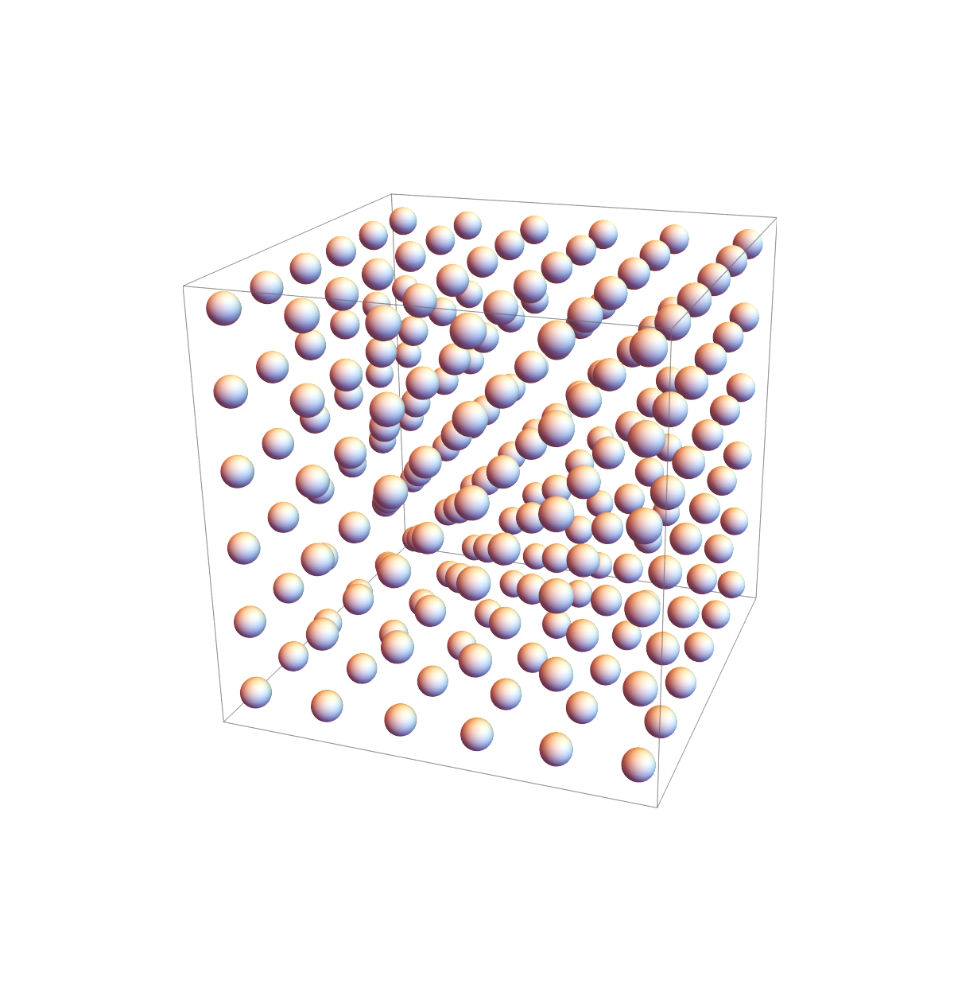

Quantum Modeling
Challenge
In summer 2023, I worked with my math professor, Vidvuds Ozolins, chair of Yale applied physics, on a major problem in quantum computing -- quantum error correction. The information storing qubits in a quantum computer often randomly corrupt mid-computation making large programs infeasible.
One solution is storing information on a hyberbolic lattice, which enables use of topological properties that endure the corruption of a single qubit. Understanding such a system requires calculating its energy band structure, which is what I worked on.
Solution Summary
The energy band structure can be approximated with the tight-binding model which simplifies the math involved be assuming all electrons each belong to a fixed site on the lattice. Initially the goal was to do this computation on a hyperbolic lattice, but that goal shifted to implementing a tight-binding model for the more traditional Bravais lattice as proof-of-concept because I wanted to get the model right before extrapolating to the more novel situation.
Shown below is code for the model I wrote. The cube of spheres pictured above is a visualization I made of a simple cubic Bravais lattice.
Result
My program takes as input 3 binding parameters which represent the interactions between atoms in the lattice. It produces a visualization of the electronic band structure, that's manipulable and updates in real time as a user adjusts the binding parameters. My model's advantage is this interactivity which facilitates analysis and develops intuition for the workings of lattice band structures.
Pictured below is the program's output for various values of the binding parameters.